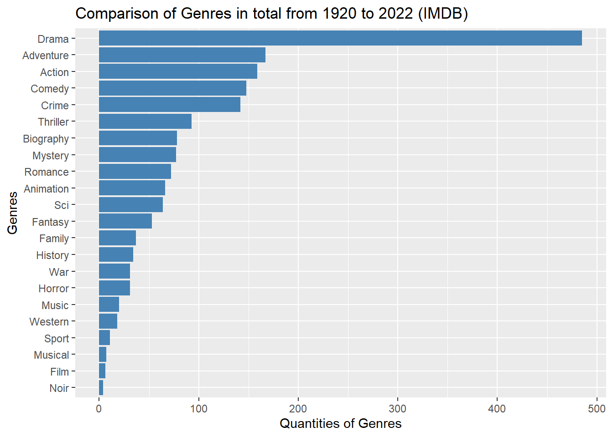
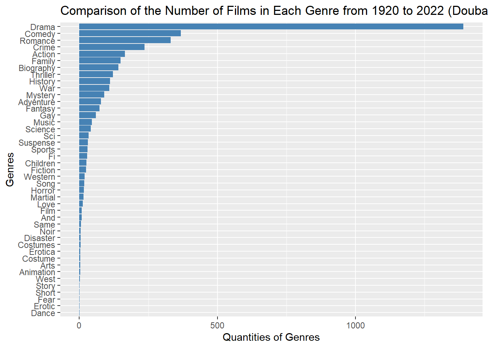
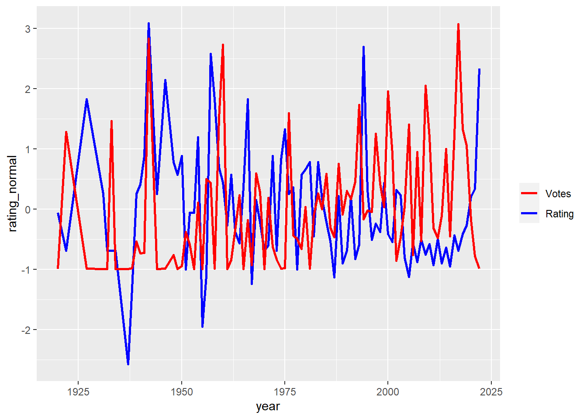
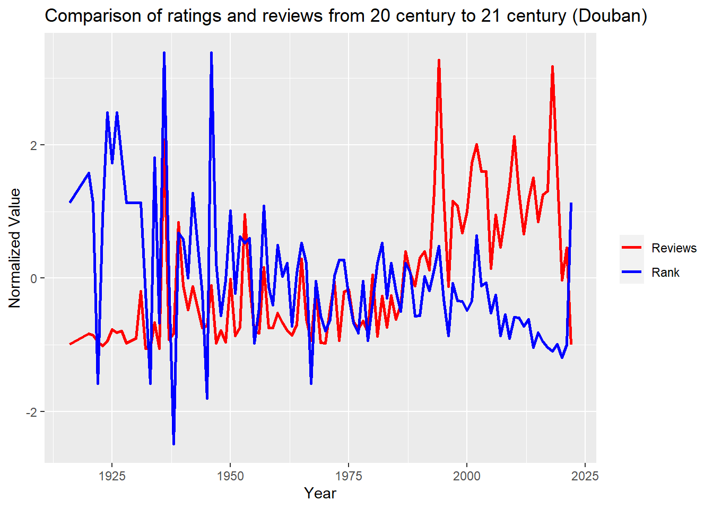
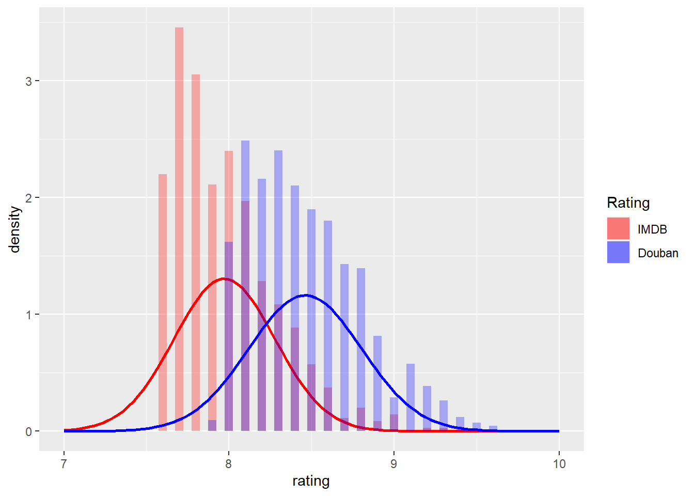

Chapter 5 Results
Does the rating of a movie correlate with the number of people watching or reviewing it? (The more people review and rate these movies, the more popular they are, the higher the rating they receive?)
How have film genres changed over time?
Do movie ratings differ significantly on different movie sites?
## # A tibble: 6 x 12
## ...1 Name Type Duration Year Director Actor Language Reviews Rank Country Century
## <dbl> <chr> <chr> <dbl> <dbl> <chr> <chr> <chr> <dbl> <dbl> <chr> <dbl>
## 1 0 The Shawshank Redemption Crime / Drama 142 1994 Frank Darabont Tim Ro~ English 2610384 9.7 USA 20.9
## 2 1 Farewell My Concubine Drama / Romance / Gay 171 1993 Chen Kaige Leslie~ Mandarin 1938287 9.6 Mainla~ 20.9
## 3 2 Witness for the Prosecution Drama / Crime / Mystery 116 1957 Billy Wilder Tyrone~ English 456535 9.6 USA 20.5
## 4 3 Forrest Gump Drama / Romance 142 1994 Robert Zemeckis Tom Ha~ English 1962283 9.5 USA 20.9
## 5 4 La vita è bella Drama / Comedy / Romance / War 116 1997 Roberto Bernini Robert~ Italian 1205797 9.6 Italy 20.9
## 6 5 Schindler's List Drama / History / War 195 1993 Steven Spielberg Liam N~ English 1005746 9.6 USA 20.9## # A tibble: 6 x 9
## Column1 movie_title year place rating vote link duration genre
## <dbl> <chr> <dbl> <dbl> <dbl> <dbl> <chr> <chr> <chr>
## 1 0 The Batman 2022 1 8 434477 /title/tt1877830/ 176 min Action, Crime, Drama
## 2 1 The Northman 2022 2 7.8 40320 /title/tt11138512/ 137 min Action, Adventure, Drama
## 3 2 Everything Everywhere All at Once 2022 3 8.8 31625 /title/tt6710474/ 139 min Action, Adventure, Comedy
## 4 3 KGF: Chapter 2 2022 4 8.9 55 /title/tt10698680/ 168 min Action, Crime, Drama
## 5 4 Spider-Man: No Way Home 2021 5 8.4 86180 /title/tt10872600/ 148 min Action, Adventure, Fantasy
## 6 5 Dune 2021 6 8.1 613257 /title/tt1160419/ 155 min Action, Adventure, Drama5.1 Genre
5.1.1 IMDB

From this vertical histogram on Comparison of Genres in total from 1920 to 2022 (IMDB), we observed that:
1. Drama seems to be the most popular genre, which is far more than any other genres.
2. Adventure, Action, Comedy, and Crime are also with high degree of popularity just followed by Drama in the top 5 places.
3. Compared with other film genres, the number of Drama in the top 700 list is several times or even closed to a hundred times higher than other genres in the whole 102-year period in this intraday list on the dynamic page.
5.1.2 Douban

From this vertical histogram on Comparison of the Number of Films in Each Genre from 1920 to 2022 (Douban), we observed that:
1. Drama seems to be the most popular genre, which is far more than any other genres.
2. Comedy, Romance, Crime, and Action are also with high degree of popularity just followed by Drama in the top 5 places.
3. Compared with other film genres, the number of Drama in the top 1664 list is several times or even closed to a hundred times higher than other genres in the whole 102-year period in this intraday list on Douban website.
Conclusion for the Comparison on genres from IMDB and Douban:
1. Drama is the most popular genre on both websites from 1920 to 2020.
2. Comedy, Crime, and Action are also popular and ranked in the top five.
3. Romance has higher quantities on Douban, while Adventure has higher quantities on IMDB. Therefore, users of Douban prefer Romance than Adventure with high probabilities; users of IMDB prefer Adventure than Romance more likely.
5.2 Score and Reviewers
5.2.1 IMDB
## # A tibble: 90 x 5
## # Groups: year [90]
## year rating_mean vote_mean rating_normal vote_normal
## <dbl> <dbl> <dbl> <dbl> <dbl>
## 1 1920 8 73627 -0.0603 -0.992
## 2 1922 7.9 66208183 -0.689 1.28
## 3 1927 8.3 231868 1.83 -0.987
## 4 1931 8.05 113067 0.254 -0.991
## 5 1932 7.9 89581 -0.689 -0.992
## 6 1933 7.9 71516617 -0.689 1.47
## 7 1934 7.9 26197 -0.689 -0.994
## 8 1937 7.6 99968 -2.58 -0.991
## 9 1938 7.8 530870 -1.32 -0.976
## 10 1939 8.05 13251644. 0.254 -0.539
## # ... with 80 more rows## $x
## [1] "Year"
##
## $y
## [1] "Normalized value"
##
## $title
## [1] "Comparison of ratings and votes from 1920 to 2022 (IMDB)"
##
## attr(,"class")
## [1] "labels"
5.2.2 Douban
## # A tibble: 102 x 5
## # Groups: Year [102]
## Year Reviews_m Rank_m Reviews_n Rank_n
## <dbl> <dbl> <dbl> <dbl> <dbl>
## 1 1916 9897 8.8 -0.989 1.13
## 2 1920 23030 8.9 -0.833 1.58
## 3 1921 21380 8.8 -0.852 1.13
## 4 1922 13485 8.2 -0.946 -1.58
## 5 1923 7644. 8.75 -1.02 0.903
## 6 1924 14031 9.1 -0.940 2.48
## 7 1925 28915. 8.93 -0.763 1.73
## 8 1926 24433 9.1 -0.816 2.48
## 9 1927 26657 8.95 -0.790 1.80
## 10 1928 10877. 8.8 -0.977 1.13
## # ... with 92 more rows
The above two plots on Comparison of ratings and votes from 1920 to 2022 for both IMDB and Douban indicate that:
1. From 1920s to early 1960s, the number of movie viewers was low, but the ratings were generally high.
2.From 1960s to 1990s, the number of viewers began to increase, but the ratings were slightly mediocre.
3. From 1990s to this year, the number of movie viewers continued to rise significantly, but at the same time the movie ratings also had a gradual upward trend.
5.3 Histogram of The Combination with IMDB and Douiban
## [1] 9.3## [1] 7.6## [1] 9.7## [1] 7.4
As plot the density histograms of these two datasets, we could observe that:
1. The distributions of IMDB and Douban are similar, approximately normally distributed, which indicates that we have enough samples to do the analysis.
2. The size of high rating in Douban is large than IMDB, more movies are located in the range [8.5,10].
Remember, our dataset only contains the popular movies or the movies which have rating > 7, so if the dataset is large enough, the distribution of them could be more convictive.